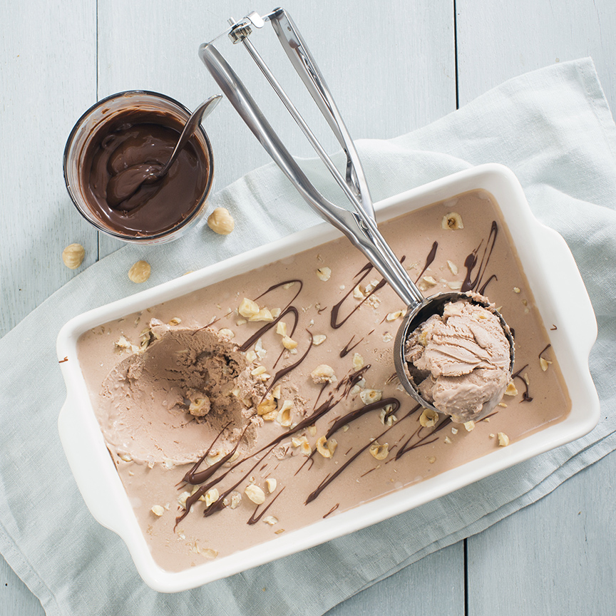

Nutella ijs
Dit gehaktbrood kan prima bij een avondmaaltijd, maar is ook een makkelijk gerecht voor een buffet.
Ingrediënten
- 1 blikje gecondenseerde melk a 397 ml
- 500 ml slagroom
- Handje hazelnoten
- 5 eetlepels Nutella
Bereidingswijze
- Doe de slagroom en gecondenseerde melk in een kom en mix met een mixer net niet stijf.
- Voeg 4 eetlepels Nutella toe (of meer) en wat grof gehakte hazelnoten.
- Spatel dit er doorheen en giet het mengsel in een of meerdere schalen of vormen.
- Bestrooi met wat extra hazelnoten en drizzel er wat extra Nutella over. Zet minimaal 6 uur in de diepvries tot het ijs hard is geworden.
